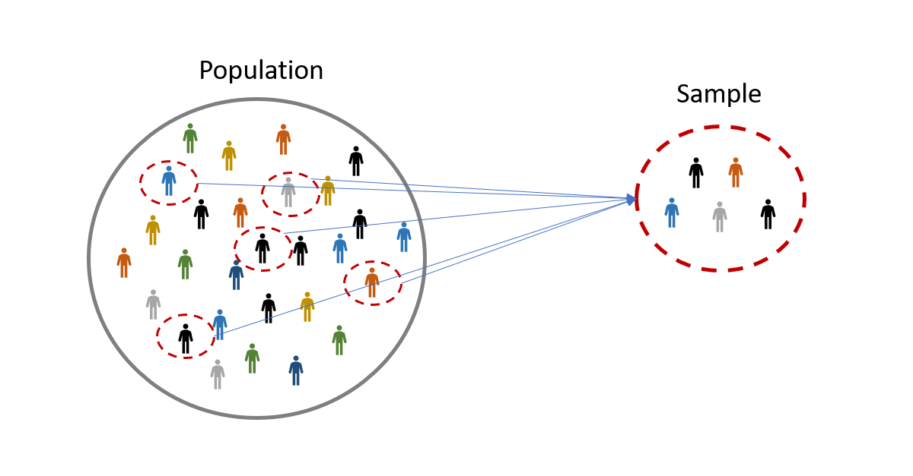
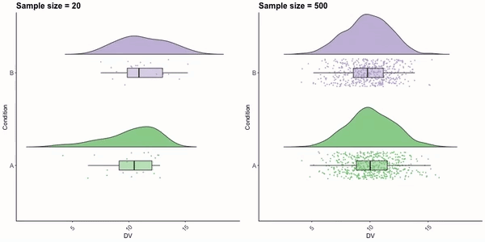
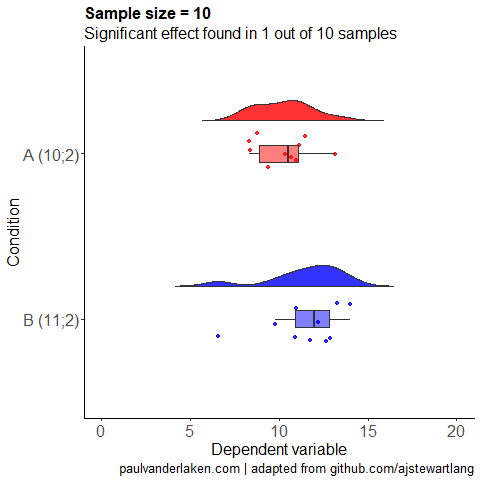
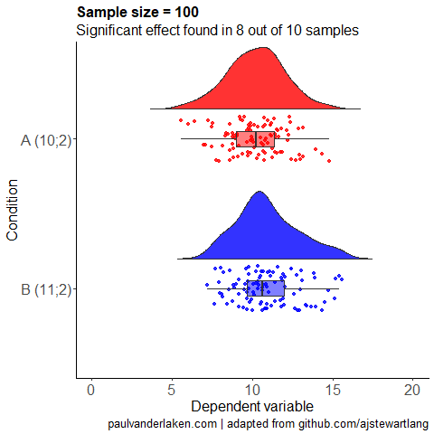
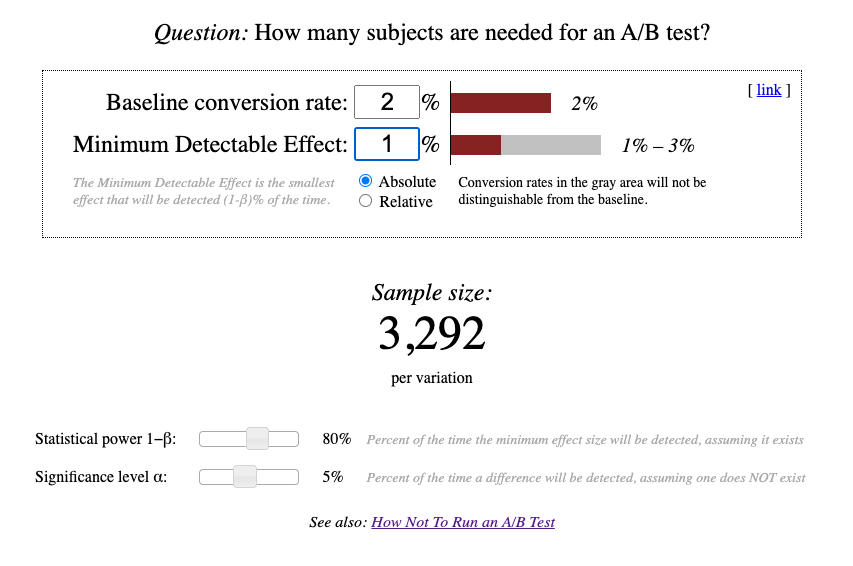
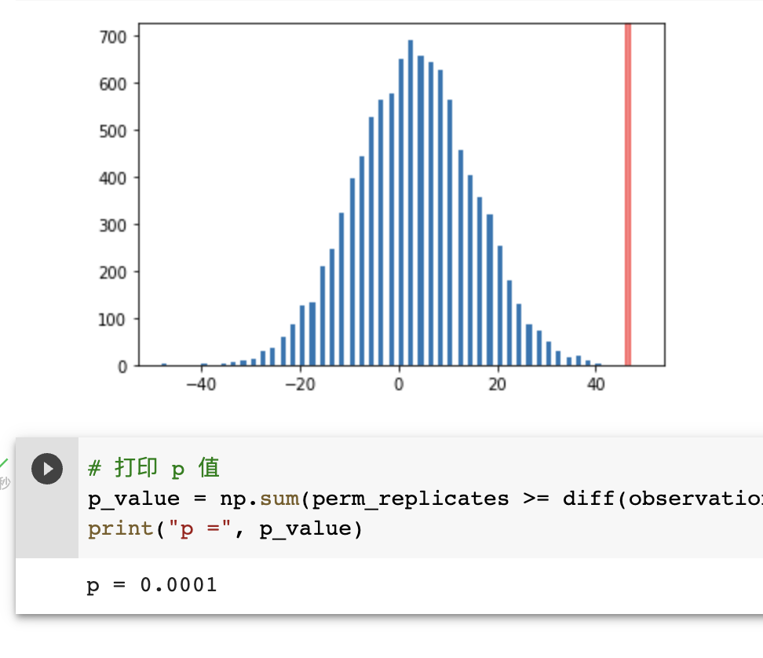
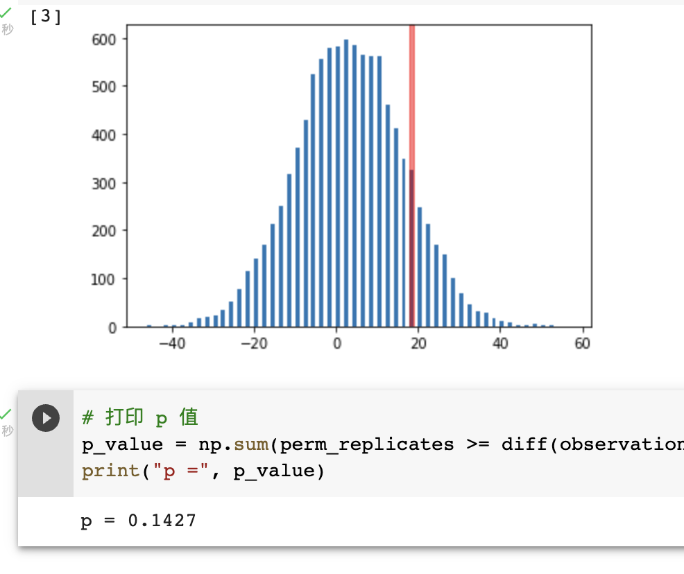

一次实验、两种错误、三个直觉
最近，我们在公司内部做了一些 Hacking Growth 方向的探索，我们团队俨然成了增长团队，从用户增长、转化的各个环节上尝试不同的策略，拉新、激活、留存、促活、商业化，整个核心流程是一个大漏斗，不同的阶段和渠道又可以拆分成不同的小漏斗，哪个环节损失大就优化哪个。但无论做何种尝试，都绕不开 A/B 测试。
对于一名工程师，我认为 A/B 测试有两个角度值得了解：
如何搭建一个 A/B 测试平台，支持流量分层、转发，让不同实验共享流量；
如何动手做一个 A/B 测试，并能合理地解读统计结论，指导后续生产实践；
对于前者，业界已经有许多最佳实践，比如之前引我入门的这篇论文 Overlapping Experiment Infrastructure，以及伴鱼的小伙伴们写的两篇实践总结 [1]、[2]；本文想聊的是后者。
1. 一次实验
在互联网场景中，无论是拉新、激活、留存、促活还是商业化，所有的 A/B 测试都可以用一个公式来概括：
💡 方案 A 的转化率比方案 B 的更高吗？
为了后续的讨论能更具体一些，我们先看一个实际的测试场景：假设我们需要给某个用户群体拨打 AI 电话，之前一直在使用家琪的声音拨打电话，现在供应商新推出了小红的声音，我们想知道小红的声音是否有更好的表现。于是，在其它条件相同的情况下，我们分别用小红和家琪的声音给若干用户打了电话，这次的实验现象如下表所示：
| 实验现象 | 小红 | 家琪 |
|---|---|---|
| 接通 | 3469 | 2798 |
| 意向 | 98 | 43 |
| 意向率 | 2.83% | 1.54% |
套用刚才的公式，这个 A/B 测试就是：
小红声音的意向率比家琪声音的更高吗？
1.1 从现象到结论
从现象走到结论的方式有两类，即经验判断和统计分析。经验判断就是基于检索的分析，从一个人过去的经历中找到最相似的情况，然后基于它们来确定结论；统计分析就是基于概率的分析，从一个现象出现的概率大小来决定接受哪种结论。以刚才这个实验为例，我们关心的结论无非就是两种：
小红声音的意向率比家琪声音的更高
小红声音的意向率没有比家琪声音的更高
由于是第一次使用 AI 电话触达用户，过往的经验对我们帮助不大，因此统计分析就是唯一的依靠。
1.2 从结论到事实
结论和事实可能一致，也可能不一致，还是以刚才的 AI 电话为例，我们可以将结论和事实的关系整理成下表：
| 结论\事实 | CR(小红) > CR(家琪) | CR(小红) ≤ CR(家琪) |
|---|---|---|
| CR(小红) > CR(家琪) | ✅ | ❌ |
| CR(小红) ≤ CR(家琪) | ❌ | ✅ |
出现不一致的原因主要在于，考虑到成本因素，每次实验使用的是总体人群的一小部分，即所谓的样本。样本对总体的代表性取决于它在总体中的分布是否足够均匀：

2. 两种错误
当结论和事实不符时，可能产生两种错误：
| 结论\事实 | CR(小红) > CR(家琪) | CR(小红) ≤ CR(家琪) |
|---|---|---|
| CR(小红) > CR(家琪) | ✅ | ❌ 误以为发现更好的方案 |
| CR(小红) ≤ CR(家琪) | ❌ 错过更好的方案 | ✅ |
它们分别是「误以为发现更好的方案」和「错过更好的方案」。从可能的结果上看，前者可能导致系统设计者在错误的方向上推进，对业务直接造成负面影响；后者则不会产生任何影响，但业务在增长上错过了一个发力点。从危险程度上看，前者更大，后者更小，也受此影响，实际工作中人们往往会更关注第一类错误。
两种错误之间存在此消彼长的关系：如果我们过分强调避免第一类错误，判断时就倾向于使用更保守的策略，过于保守就容易犯第二类错误；反之，如果我们过分强调避免第二类错误，判断时就倾向于使用更激进的策略，过于激进就容易犯第一类错误。
两种错误之间存在互斥关系：在实际的一次结论判断中，如果结论是 A 方案比 B 方案好，就只可能犯第一类错误；如果结论是 A 方案没有比 B 方案好，就只可能犯第二类错误。一个结论不会同时犯两类错误。
3. 三个直觉
3.1 统计分析也是在猜，只是猜得更有章法
在做任何统计分析之前，我们需要先设定自己的信仰 — α 和 β。
| 结论\事实 | CR(小红) > CR(家琪) | CR(小红) ≤ CR(家琪) |
|---|---|---|
| CR(小红) > CR(家琪) | 1 - α | α |
| CR(小红) ≤ CR(家琪) | β | 1 - β |
α 就是犯第一类错误的概率；β 就是犯第二类错误的概率，这两个值确定了我们的风险偏好。假设 α = 5%，意味着如果结论是 A 方案比 B 方案好，我们有 5% 的概率会误以为发现更好的方案；假设 β = 20%，意味着如果结论是 A 方案没有 B 方案好，我们有 20% 的概率会错过更好的方案。
之后统计分析的工作就是通过对人群分布的理解来构建概率模型，然后按照我们设定的信仰来作出判断。所以统计分析也是在猜，只是猜的时候，我们知道自己犯错的概率，采用激进的策略时也能对犯错的结果有心理预期。
3.2 假设检验就是在确认现象是否是巧合
假设检验的基本过程是：
假设我们不相信的结论正确
证明观测到的现象是一个小概率事件
拒绝假设，选择我们相信的结论
以小红和家琪的声音选择测试为例，它的过程就是：
假设：小红声音的意向率没有比家琪声音的更高
证明观测到的数据出现的概率小于 5%
拒绝假设，认为小红声音的意向率比家琪的声音更高
一个具体的证明过程可以以附录中的 Permutation Test 为参考，本节不深入讨论。
3.3 成本不是问题之前，样本量越大越好
3.3.1 样本量对第一类错误的影响
下面这张 GIF 图是从同一个总体中多次采样的分布结果，左图的样本量为 20，右图的样本量为 500。

左图中，A、B 两组采样的结果差异变化很大，有时候 A 看起来比 B 好，有时候看起来一样好，有时候看起来比 B 查；右图中，A、B 两组采样的结果差异变化很小，看起来两组采样的分布总是比较类似。即样本量较小时，A 更容易被误判为更好的方案，而样本量的增加可以降低第一类错误的发生概率。
3.3.2 样本量对第二类错误的影响
下面的两张 GIF 图是从两个不同的总体中多次采样的分布结果，样本量分别为 10 和 100。


样本量为 10 时，B 的分布有时候会跑到 A 的左边，即犯第二类错误；样本量为 100 时，B 的分布总是在 A 的右边，符合预期。因此样本量的增加可以降低第二类错误的发生概率。
3.3.3 样本量越大越好
从上面两组 GIF 图中，可以直观地看出，增加样本量可以同时降低第一类和第二类错误发生的概率。
4. 尝试做一个 A/B 测试
了解了「一次实验、两种错误、三个直觉」之后，我们就来尝试做一个完整的 A/B 实验。
4.1 计算最小样本量
尽管直觉说样本量越大越好，但实际情况下流量资源即非无限、也非召之即来，我们需要计算一个最小的样本量。网上可以找到一些开箱即用的最小样本量计算器，这里以 Sample Size Calculator (Evan’s Awesome A/B Tools) 为例：

图中有 4 个参数，分别是：
| 参数 | 含义 |
|---|---|
| Baseline conversion rate | 基准转化率 |
| Minimum Detectable Effect | 最小可发现效果 |
| Statistical power 1-β | 统计功效 |
| Significance level α | 显著性水平 |
由于之前使用的是家琪，家琪的意向率在 2% 左右，因此基准转化率选择 2%；我们预估小红比家琪能带来 1% 以上的意向率改进，因此最小可发现效果选择 1%，如果后续发现这个改进并没有 1% 可以再回来调整。最后 α 和 β 的选择就是我们的信仰 — 风险偏好，如果你不知道该选什么，最佳实践就是 α = 5%，β = 20%。
一通操作下来后，我们可以看到每个方案的样本数最小值为 3292。
4.2 线上执行 A/B 分流
各大公司都有自己的 A/B 平台实现，这里按住不表。执行时务必保证每个方案的样本数量大于最小值。本文开头给出的实验现象中，家琪声音对应的样本数量只有 2798，小于最小样本数量，因此还需要补充一部分家琪声音的实验数据。
4.3 运行假设检验
这里我推荐的是 Permutation Test，详细原理请看附录。我利用 Google 的 Colab 做了一个在线可执行的假设检验程序，打开以后将实验数据分别填入 total_A、succ_A、total_B 和 succ_B 中，假设实验现象是：
| 现象 | 小红 | 家琪 |
|---|---|---|
| 接通 | 3469 | 3357 |
| 意向 | 98 | 52 |
那么填入的值分别为 3469、98、3357、52。执行的结果如下图所示：

这里得到的 p 只要小于我们信仰中的 α，就可以认为小红声音的意向率高于家琪，且该结论错误的概率为万分之一。即便你是一位风险厌恶者，面对这样的错误率应该也可以放宽心了。
假设实验现象是：
| 现象 | 小红 | 家琪 |
|---|---|---|
| 接通 | 3469 | 3357 |
| 意向 | 98 | 80 |
执行结果如下图所示：

这里得到的 p 大于 α，就应该认为小红声音的意向率没有比家琪更高，该结论的错误率最大为 β，即 20%。
5. 附录
5.1 基于 Permutation Test 的假设检验
以下面的实验现象为例：
| A | B | |
|---|---|---|
| 接通 | 3469 | 2798 |
| 意向 | 98 | 43 |
| 意向率 | 2.83% | 1.54% |
从绝对数值上看，A 方案的意向率要高于 B 方案，似乎意味着 A 方案更好。方案 A 真的更好吗？这次实验的结果有可能只是个巧合吗？基于此，我们的假设如下：
零假设：方案 A 和方案 B 没有差别
备择假设：方案 A 比方案 B 更好
下面使用的假设检验方法叫 Permutation Test，主要因为它很符合直觉，没有参数，无数学公式。Permutation Test 做的事情很简单，就是把当前的意向用户 (98+43=141) 重新随机打散分配到池子 (3469+2798 = 6267) 中，然后从池子中随机取 3469 个用户归属于 A 方案，剩下的归属于 B 方案。以上就是一次随机分配的模拟实验。假设单次模拟实验后有 X 个用户归属于 A 方案，Y 个用户归属于 B 方案，那么 X、Y 取值范围就是满足下列条件的任意组合：
如果重复做 10000 次这样的模拟实验，并以 X-Y (这里以 X-Y、Y-X、X 或者 Y 为例皆可) 的值为横坐标，取值范围为 [-141, 141]，其各个取值的出现频次 Freq(X-Y) 为纵坐标，就很容易得到一个钟型曲线：
它就是随机变量 X-Y 的频度直方图，理论上它的形状应该趋近于变量 X-Y 的概率密度函数。有了 X-Y 的频度直方图，我们就可以找到本节初提到的实验结果 (x-y = 55) 在直方图中的位置：
利用 x-y 在频度直方图中的位置，我们就能估算出 x-y 在随机变量 X-Y 概率密度函数上的分位点。在一次模拟实验中，我们算得的分位点为 99.95%，这意味着「如果零假设成立，观测到 x-y >= 55 的概率为 0.05% (1-99.95%)」，即做一万次实验，只有五次能观测到 x-y >= 55。这是个小概率事件，我们有充足的信心选择拒绝零假设，相信备择假设，如果一定要给这个信心加一个数字，那么它就是 99.95%。
如果你听过蒙特卡洛方法 (Monte Carlo Method)，刚才这个过程就是蒙特卡洛模拟。实现逻辑可以参考我的这篇 gist AB-Permutation-Test · GitHub。